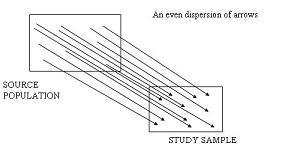
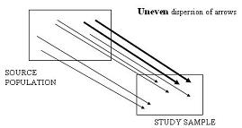

Selection Bias - Descriptive Study
Lead Author(s): Jeff Martin, MD
Unbiased Sampling in Descriptive Studies
Here is a schematic representation of what we hope to do to avoid selection bias when sampling in a descriptive study.
- On the left we depict the reference or target or source population and on the right is our study sample.
- Our goal is to have the study sample validity represent the source population, which we are showing here by an even dispersion of arrows stemming from the source population to the study sample.
Schematic of Unbiased Sampling

Biased Sampling in Descriptive Studies
This is what selection bias would look like in a descriptive study.
- The study sample has an over representation of this portion of the source population (depicted by the dark arrows).
- We see an uneven dispersion of arrows.
Schematic of Biased Sampling

See Also
Other causes of selection bias